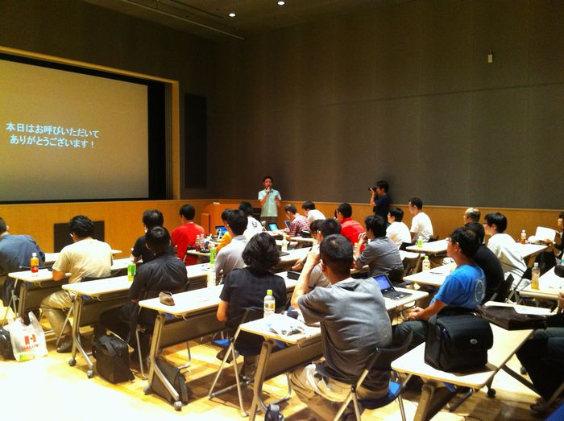

岡山オープンソース技術研究会 ／ 第12回 - オープンラボ岡山
- 終了しました。
?開催風景



?収支報告
<勉強会> [収入] 参加費 0 ------------------------- 収入合計：0 [支出] 会場費 0 冷暖房費 4,200 ------------------------- 支出合計：4,200 --------------------------------------- 収入合計ー支出合計： - 4,200 <懇親会> [収入] 懇親会費 38,500 ------------------------- 収入合計：38,500 [支出] 懇親会費 32,500 ------------------------- 支出合計：32,500 --------------------------------------- 収入合計ー支出合計：6,155 <合計> 前回繰り越し -394（ひらが負担） 勉強会 -4,200 懇親会 6,155 --------------------------------------- 合計 1,561
?参加申し込み方法
勉強会：
http://atnd.org/events/7589
懇親会：
http://atnd.org/events/7590
?詳細
オープンラボ岡山 オープンラボ岡山とは、岡山周辺の技術者のための勉強会プラットフォームとして、 勉強会や読書会の場を提供するための組織です。勉強会や読書会を開催したい方、 参加したい方が簡単に集まることの出来る場にしたいと考えています。運営委員は 全員ボランティアで、それぞれが勉強会や読書会の主催者でもあります。興味のあ る方は是非とも一緒にやりましょう。 ■名称： 第12回 オープンラボ岡山 ■参加申し込み方法 勉強会： http://atnd.org/events/7589 懇親会： http://atnd.org/events/7590 ■参加費： 無料 ■開催日時： 2010年9月11日（土曜日） 13:00～17:00 ■開催場所： 岡山市デジタルミュージアム４F講義室 http://www.city.okayama.jp/okayama-city-museum/riyou/riyou_sisetu.html ■主催: 岡山県立大学アクティブキャンパス事業「岡山オープンソース技術研究会」 オープンラボ岡山 実行委員会 ■共催： 岡山Javaユーザ会( http://java.okaya.ma/ ) 瀬戸内Linuxユーザ会（ http://www.stlug.org/ ) LinuxKernelHackJAPAN( http://hira-consulting.com/wiki ) オープンセミナー＠岡山実行委員会( http://openseminar.okaya.ma/ ) 日本PostgreSQLユーザ会 中国支部( http://www.postgresql.jp/ ) ■懇親会（任意）： 居酒屋土間土間 4000円程度を予定 http://www.e-map.ne.jp/pc/index.htm?cid=domadoma&kid=0186102 ---------------------------------------------------------------------- 【あいさつ】芝さん（岡山県立大学） 【セッション１】FreeBSDは何故演習室に採用されなかったか -Debianとの比較- 【発表者】荒井剛さん（岡山県立大学） 【セッション２】アルゴリズムとデータ構造とハードウエア - ハードウエアを意識しよう - 【発表時間】1時間 【セッション３】アルゴリズムとデータ構造とハードウエア - 実践編 - 【発表時間】1時間 【発表者】 ・堀江啓一さん（株式会社フィックスターズ） 大学では情報科学を、大学院は数学を研究。就職後は物理シミュレーション の研究/開発に携わる。フィックスターズに転職し、ハードウエアアーキテク チャを活かしたプログラム開発とマネージメントを行っている。 【概要】 近年、CPUの性能の伸びは著しいが、さらにCELLやGPGPUなど高速演算専用の ハードウエアが登場している。これらの能力を最大限に活かすプログラミン グをアルゴリズムとデータ構造という観点を交えて発表する。 【セッション４】『IT業界を生き抜くための「つまみぐい勉強法」』の著者２名による講演（仮） 【発表時間】1時間 【書籍URL】 http://gihyo.jp/book/2010/978-4-7741-4259-3 http://www.amazon.co.jp/dp/477414259X 【発表者】 ・奥乃美さん（nomico） IT系企業に勤めて仕事にアップアップの日々に，藁をも掴む気持ちで始めたGTDに味を しめ，その後突っ走って過ぎること早数年。研鑽内容についてはブログのworks4Life にて展開中。現在は，GTDの理解を日本で深めるためにmixiでGTD勉強会も開催中。 ブログ：http://works4life.jp GTD勉強会：http://mixi.jp/view_community.pl?id=3013597 ・渋川よしきさん（しぶかわよしき） 社内SE。ソフトウェアを中心に，ライフハック，インラインスケートなど，様々なコミ ュニティの運営に関わってきた。日本XPユーザグループには設立準備の時から。現在メ インのコミュニティはとちぎRubyとPython温泉(系)で，ドキュメントツールのSphinxの コミュニティの設立準備中。趣味は技術文書の翻訳とLT。 Twitter：@shibukawa ブログ：http://blog.shibu.jp
Copyright(C)2009 オープンラボ岡山運営委員会 All rights reserved.